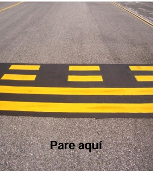
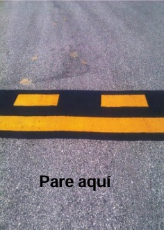
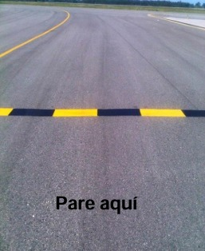
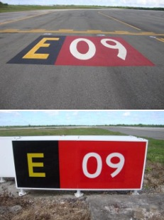
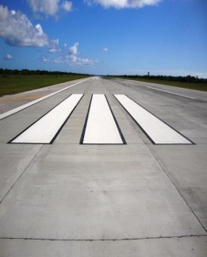
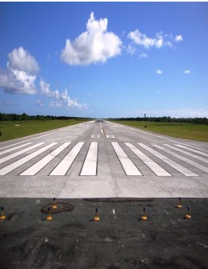
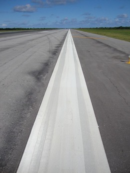
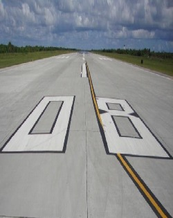

Conductores · Radio · Señalización · Luces · Seguridad
Introducción
Este módulo interactivo está diseñado para reforzar prácticas seguras de conducción en el Área de Operación Aeroportuaria (AOA), enfocándose en comunicaciones, señalización, marcas y luces.
Regla de oro
Nunca ingresar a pista/área de maniobras sin autorización ATC.
Enfoque
Prevención de incursiones, comunicaciones claras y respeto absoluto a señales y luces.
Interactividad
Elementos “clic para revelar”, mini-simulaciones, y quiz final con calificación.
Actividad rápida (30 segundos)
Antes de continuar, responde mentalmente: ¿Cuáles son tus 3 riesgos principales al conducir cerca de una pista activa?
Objetivo y responsabilidades
Objetivo general
Establecer un programa de capacitación estandarizado para conducir en el área de maniobra y movimiento, manteniendo el nivel más alto posible de seguridad en el entorno del aeropuerto.
Claves para lograrlo
Disciplina de comunicaciones (fraseología y colación).
Respeto a puntos de espera (hold bars) y límites.
Conducción defensiva: velocidad, atención y visibilidad.
Cero cruces sin autorización ATC.
Responsabilidad
El Comité de Seguridad Operacional del Aeropuerto, a través del Director de Operaciones Airside, debe garantizar que el programa se implemente y se mantenga. El personal de Operaciones Airside recopila datos y analiza el programa.
Tu rol como conductor
Confirmar instrucciones con colación (“Copiado…”).
Mantenerse detrás de líneas sólidas en puntos de espera.
Reportar condiciones inseguras y casi incidentes.
Detenerse y pedir aclaración ante cualquier duda.
Radio y fraseología
Frecuencias (referencia)
Consulta siempre los canales asignados en tu operación. Lista de ejemplo:
Canal
Uso
Frecuencia 5
Grupo Puntacana – Torre de Control, SSEI, Operaciones, UMA, Combustible
Frecuencia 3
Grupo Puntacana – Servicios Generales CAE, Seguridad, Terminales, CESAC
TWR 118.80
Aeronave–ATC (Torre de Control)
Ground 121.90
Aeronave–ATC (Rodaje)
Clearance 121.65
Aeronave–ATC
Aproximación 119.75
Aeronave–ATC
VIP 131.75
Aeronaves–Terminales VIP
Alfabeto aeronáutico (rápido)
Haz clic para revelar una ayuda-memoria compacta.
A Alfa
B Bravo
C Charlie
D Delta
E Echo
F Foxtrot
G Golf
H Hotel
I India
J Juliett
K Kilo
L Lima
M Mike
N November
O Oscar
P Papa
Q Quebec
R Romeo
S Sierra
T Tango
U Uniform
V Victor
W Whiskey
X X-ray
Y Yankee
Z Zulu
Fraseología y colación
La fraseología estandarizada reduce ambigüedades. La colación es repetir lo recibido para confirmar que fue entendido correctamente.
Mini-simulación: ¿Cómo respondes?
Situación: estás en TWY A lado sur, solicitas proceder al punto de espera.
Buenas prácticas (checklist)
Identifico claramente mi posición (TWY, lado, punto).
Solicito autorización de forma breve y específica.
Repito instrucción clave con colación (ruta/punto de espera/pista).
Notifico cuando estoy establecido (“establecido en…”).
Caso Tenerife (Los Rodeos)
Este caso es un recordatorio histórico de cómo una combinación de factores (comunicación, visibilidad, procedimientos) puede terminar en una catástrofe.
Contexto
Alta carga operativa y condiciones complejas (incluyendo visibilidad reducida) incrementan el riesgo.
Factor crítico
Interpretaciones diferentes de mensajes y confirmaciones insuficientes pueden crear “falsas certezas”.
Lección práctica para conductores
En superficie, una frase mal entendida puede equivaler a una incursión. Si hay duda: detenerse y pedir aclaración.
Principio operativo
Sin autorización ATC no hay cruce. Y sin colación clara, la autorización no está confirmada.
Señalizaciones clave
Las señalizaciones y líneas en el área de movimiento indican límites, puntos de espera y reglas obligatorias.

Punto de espera (Hold Bar)
Detente detrás de líneas sólidas y espera autorización ATC.

Movimiento / No movimiento
Delimita área controlada; autorización ATC requerida para cruzar hacia área de maniobra.

Posición intermedia (Holding Position)
Control de flujo en TWY/plataforma: puede requerir detenerse y esperar instrucción.

Instrucciones obligatorias
Señalización obligatoria asociada a guía y control del movimiento en superficie.
Mini-evaluación
Si ves una línea sólida antes de una pista: ¿dónde debes detenerte?
Marcas de pista (visión rápida)
Designador de pista
Número de dos cifras (y letra si hay paralelas). Ayuda a confirmar que estás en la pista correcta.
Eje de pista
Líneas discontinuas blancas uniformemente espaciadas: referencia visual del centro.
Umbral
Líneas simétricas respecto al eje. Indican inicio de pista utilizable.
Touch Down Zone
Líneas en la zona de toma de contacto (pistas de precisión/no precisión).
Franja lateral
Líneas a lo largo del borde de la pista que delimitan la superficie utilizable.
Ejemplos visuales
Eje de pista (Centerline) Línea(s) blanca(s) discontinua(s) que marca(n) el centro de la pista para alineación.

Touch Down Zone Marcas en la zona de toma de contacto; ayudan a la referencia visual durante la aproximación/aterrizaje.

Umbral de pista (Threshold) Marcas que indican el inicio de la pista utilizable para aterrizaje.

Franja lateral (Runway Side Stripe) Delimita el borde de la superficie utilizable de la pista.

Designador de pista Número (y letra si hay paralelas) que identifica la pista (ej. 08/26).
Tip operativo
Como conductor, usa marcas para mantener orientación. Si tu posición no coincide con lo autorizado, detente y confirma por radio.
Luces del aeródromo (modo nocturno)
En baja visibilidad o de noche, las luces guían y alertan. En superficie, reconocer colores y función es esencial.
Umbral
Bordes
Centro
Nota: Esta simulación es didáctica (no sustituye procedimientos locales). Usa siempre la información oficial del aeródromo.
Normas para el Control de Vehículos de Aeródromos
Contenido organizado por categorías para lectura rápida. (Referencia normativa: CA-1400-04.)
Conducta y prohibiciones
Prohibido circular en zona restringida bajo efectos de alcohol o sustancias prohibidas.
Prohibido fumar o encender fuego en zona restringida, incluso dentro del vehículo.
Vías de servicio y velocidad
Utilizar siempre vías de servicio establecidas de acuerdo a la señalización.
Velocidad máxima en área de movimiento: 20 km/h.
Luces anticolisión y prioridades
Dar preferencia a un vehículo cuando tenga encendidas luces anticolisión.
Vehículos de seguridad y emergencia: luces anticolisión rojas.
Extremar la precaución cerca de vehículos con luces anticolisión encendidas.
Todos los vehículos deben ceder el paso a las aeronaves (tengan o no luces anticolisión).
Prioridad absoluta: vehículos de emergencia atendiendo aeronave en peligro.
Movimiento alrededor de aeronaves y distancias mínimas
Elementos de altura variable (ej. escaleras) deben circular en posición más baja.
Delante de aeronaves paradas con motores reactores en marcha: mantener mínimo 8.5 m (puede variar por tipo/operador).
Detrás de aeronaves paradas con motores en marcha: 50 m (convencionales) o 75 m (fuselaje ancho).
Detrás de aeronaves en movimiento: mínimo 75 m (convencionales) / 125 m (fuselaje ancho con 2 motores) / 150 m (fuselaje ancho con más de 2 motores).
Prohibido cruzar por delante de una aeronave en movimiento a menos de 200 m.
Prohibido cruzar por detrás de una aeronave en retroceso a menos de 200 m.
Si debes circular alrededor de una aeronave, hazlo de modo que el lado del conductor quede más cerca de la aeronave.
Plataforma, abastecimiento y maniobras
Ningún vehículo podrá entrar o permanecer en posiciones de estacionamiento de aeronaves, salvo para prestar servicio.
Marcha atrás/retroceso solo si es indispensable y sin invadir zonas de seguridad ni crear obstáculos.
Ningún vehículo debe obstruir la salida de camiones cisternas ni unidades dispensadoras.
Apoyos hidráulicos solo después de asegurarse que la zona está despejada.
Quiz final
Responde todas las preguntas. Al finalizar verás tu puntaje y un resumen de áreas a reforzar.
¿Qué se guarda?
Se guarda en tu navegador (localStorage): progreso, tema y el último resultado del quiz. No se envía a internet.